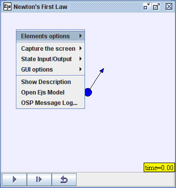

Ejs promotes an integrated understanding of the
modeling process by exposing and providing access to the underlying
assumptions in the physical model. Right-click within the simulation
and choose the Open Ejs Model option to copy the model into Ejs.
The First Law model was built with the Easy Java Simulations (Ejs) modeling tool. Ejs is a Java program that enables both programmers and novices to quickly and easily prototype, test, and distribute packages of Java simulations. It can be downloaded from the Ejs website and installed (unzipped) into a directory of your choice.
An important feature of the programs in the jar file is that it was created in such a way that users can return to the Ejs authoring tool at any time to examine, modify, and adapt the Ejs models. Right-click within the simulation and select Open Ejs Model to invoke this feature. (You must, of course, have already downloaded and installed Ejs.) The Ejs authoring tool will appear.